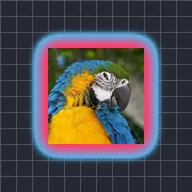

Gradien kontur

Melukis gradien dua warna ke luar dari tepi bagian opak lapisan, seperti halo berwarna yang lembut.
Pengaturan
| Pengaturan | Jenis | Rentang | Default |
|---|---|---|---|
| Warna 1 | Warna | – | #FF3C6E |
| Warna 2 | Warna | – | #3CC8FF |
| Lebar | Angka | 1 hingga 300 | 25 |
| Alpha | Angka | 0% hingga 100% | 100% |
| Isi | Angka | 0% hingga 100% | 100% |
| Pudar | Aktif atau nonaktif | – | Nonaktif |